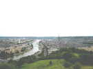
Au départ, je passe par Rouen pour voir les préparatifs de l'Armada 2008. De la corniche, panorama splendide sur la ville aux cent clochers....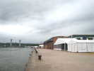
Sur les quais, les barnums sont déjà montés ! Et les travaux continuent. Au fond, le pont-levant à 2 fois 2 voies (pas encore ouvert à la circulation) qui laissera passer les trois-mâts quand il sera soulevé...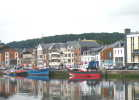
Arrivée à Fécamp autour du bassin à flot qui abrite déjà quelques chalutiers et dundees colorés !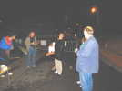
On vole un peu, puis les cervolistes arrivent progressivement... On discute autour d'un pot tranquille. Bernard enveloppe Annick d'un fourreau de plastique noir et sexy s'il n'avait pas pris les bras avec !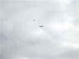
Samedi matin, pas beaucoup de vent. J'envoie ma grue voler avec les autres oiseaux. Ils n'aiment pas trop, il y a même un goéland qui lui fait des passes de tir quand elle vole bas sur la plage : Hé, c'est mon coin, là !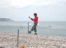
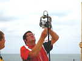
Thierry va faire de la photo sur perche avec son mât d'antenne de 9 m ! Soignons les réglages pour ne pas être obligé de redescendre le total...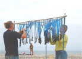
Patrick et Annick montent leurs pomponnettes, leurs baballes et leurs clés. Ca a l'air facile, mais il y a une phase de démêlage prolongée et incontournable !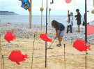
Yves le Pirate a posé son coca et décide de se mettre aux JdVs : devant les poissons suisses, il ratisse à la japonaise la spirale de galets...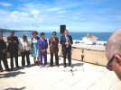
La municipalité a offert sur la terrasse du Musée de la Mer un apéritif à tous les participants, marins ou cervolistes... Les premiers inviteront ces derniers (ces dernières surtout...) à des promenades en mer !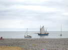
De nombreux motor-boats ou voiliers sortent (le plus souvent au moteur, y a pas de vent) et promèneront des touristes tout au long de la journée !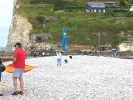
Les cerfs-volants qui sont montés restent en l'air, mais le nounours refuse obstinément de se gonfler près du sol !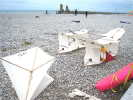
Dominique Cotard a monté ses belles répliques Bois et Coton : son Saconney, un Flaix et quelques Panteniers colorés !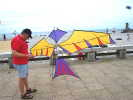
Bernard a amené de Suisse son oiseau-parapluie. Après réglage de ses 257 brides, il volera bien... l'après-midi !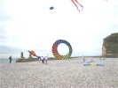
Les Tozo-de-Somain sont venus, Christian arrive enfin à déployer un énorme bol... quelques instants dans une risée.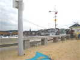
Bernard a tendu entre deux poteaux une bande de son plastique à envelopper les palettes ! Ca bruisse doucement dans la brise. Mais demain, dans le vent plus fort, on devra l'enlever au bout de 5 mn, sous peine de devenir sourds !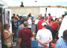
Avant le dîner avec les marins, rassemblement pour un pré-pot, Eurovoiles en offrant un autre plus tard !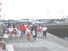
Et puis c'est la Longue Marche vers les barnums. Cette année, la bouffe n'est pas terrible, l'orchestre non plus et la sono tonitruante mais incompréhensible, on partira tôt...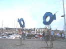
Pour se consoler, un petit tour sur les quais, avec ces poissons artistiques...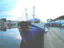
Il reste encore quelques chalutiers, comme celui-ci...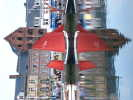
Et un drôle de cerf-volant avion au corps noir et blanc et aux ailes rouges...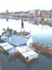
Il y a eu un concours du plus beau radeau, je ne sais pas lequel a gagné (c'est peut-être demain...) !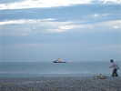
Au soir, l'Abeille La Liberté qui restera deux jours devant Fécamp s'illumine de mille feux !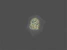
Bon, on rentre à la plage, on va se faire un petit vol de nuit (Albatros, Nasas, etc.) ! Dominique a monté son rokkaku tout blanc qui ne révèle son dessin réflectorisé que sous l'éclairage adéquat, ou au flash...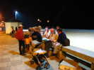
En ville, c'est un peu aussi la fête de la Musique, des orchestres à tous les carrefours ! L'un d'eux vient nous rejoindre avec un banjo, des chanteurs et des partitions, on chantera avec entrain, sinon avec justesse...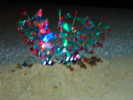
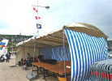
Dimanche matin, on ne peut pas se plaindre, il y a du vent aujourd'hui ! Il a fallu ramener des gueuses de béton pour sangler le barnum...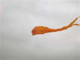
Des cerfs-volants montent quand même, PB par exemple, le pyrodelta de Patricia et Bernard, bien sûr !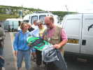
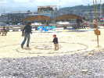
Annick et Patrick ont remonté leurs JdVs, Didier ses bambous à fil ou à fente, et réparé sa spirale de galets où les enfants et les parents s'amusent à tournicoter comme des fous...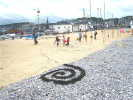
Didier a même été récolter des algues tout là-bas à l'autre bout de la plage pour ajouter une spire du côté sombre de l'art naturel...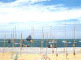
Avec la marée haute, tous les bateaux se sont fait bénir dans le bassin puis sont sortis autour de l'Abeille pour jeter une couronne à la mer à la mémoire des Péris en Mer...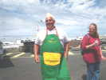
Patrick, qui nous fait la cuisine, est remercié par l'octroi d'un magnifique tablier brodé à son nom...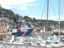
Le déjeuner s'est fait à l'abri du vent derrière un hangar du yacht-club. Pendant qu'on mange, l'Abeille, ce remorqueur de haute mer, rentre au port... pour une demi-heure tant que la marée est haute !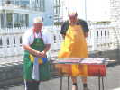
Les saucisses et les merguez vont être bientôt prêtes, mais il y a d'abord eu plein de salades diverses et goûteuses !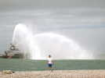
L'Abeille montre une nouvelle facette de son talent. Après un tête-à-queue sur place en dérapage dès la sortie du chenal, elle tire un feu d'artifice de jets d'eau splendides !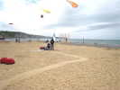
Le vent monte vers 40 km/h (en pointe), il faut des attaches solides. Il y a des gueuses, très lourdes, mais problème, elles sont toutes ensemble au bord de la promenade ! Bon, à 4 on arrive à les traîner !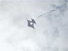
Michel, sur son scooter a apporté pour le concours un beau bois-et-coton qui rappelle un peu le Houard de l'atelier de Dominique, mais avec des ailes inégales...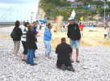
Le traditionnel concours de création a cette année un jury féminin. Patrick, avec sa belle petite raie qui vole sans porteur se traîne à genoux pour obtenir ses faveurs...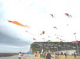
Tout le monde ne fait pas le concours, mais il y a du linge en l'air !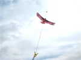
J'ai présenté mon Condor, dont la Création date un peu, et même un peu pâli par les intempéries, mais qui volera splendidement dans le vent de mer !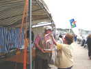
Mon Condor gagne la coupe du 3ème ! Philippe gagne le deuxième prix un trophée créé et réalisé par le regretté Jean Muguet.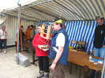
C'est Margit qui a le premier prix avec un Edo dont j'ai raté la photo...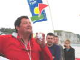
Pour finir, Thierry procède à la traditionnelle distribution générale de vaches normandes de la Seine-Maritime (qui n'est pas un département picard, Yves !)...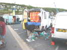
Bon, c'est fini, le rangement ne se fait pas en un clin d'oeil pour les jardiniers, il faut désassembler, transporter et caser où on peut ...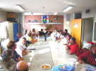
Hors programme, le club de Fécamp invite ceux qui ne partent pas de suite à finir les restes (achetés pour) dans la nouvelle salle du club ! Elle est moins grande que l'ancienne, mais moins vétuste et quand même pas petite : les grandes tables forment une surface de travail que beaucoup envieront...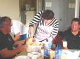
La salade de pomme de terre améliorée est touillée par notre cuisinière émérite (que nous remercions fort) avec un matériel simple et efficace...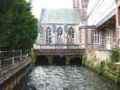
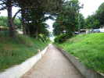
Lundi matin un peu de tourisme, je vais voir la valleuse de Grainval, où le club de Fécamp doit participer à une fête la semaine prochaine (contactez-les si vous êtes intéressés) ! La descente est bétonnée, s'il pleut, on doit arriver à la mer avec de l'élan !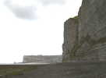
Arrivé en bas, à droite on revoit Fécamp, son phare et la plage qui nous a accueillis !